主要讲述 amd64 中函数的调用约定
前置知识
What‘s 调用约定
调用约定是一种定义子过程从调用处接受参数以及返回结果的方法的约定。
我的理解就是：当我们想要使用定义的子过程的时候，通过这些约定告诉计算机如何去处理我们所给值和返回的结果。
所谓的约定就是将常使用的方法归纳整理出来变成一个模板并加以命名。之后直接使用现成的模板就会更加方便，高效。
x64中的调用约定
在 x64 中只有一种调用约定，_cdecl、_stdcall、_fastcall 这些调用约定在程序中可以出现，也不会编译报错，但是它们都会被编译器所忽略。
在 x64 中，函数的传参规则：
- 前4个参数依次使用 rcx、rdx、r8、r9 进行传递
栈问题
调用者平栈
在 x64 中，调用方负责分配和清理参数所用的栈空间，这种平栈方式又叫外平栈。
这也是为什么在 x64 中很少见到有 ret 8 这种类似的语句。
下面是一个没有进行平栈操作的例子，在函数 asm_fun( ) 中调用了 func( ) 函数
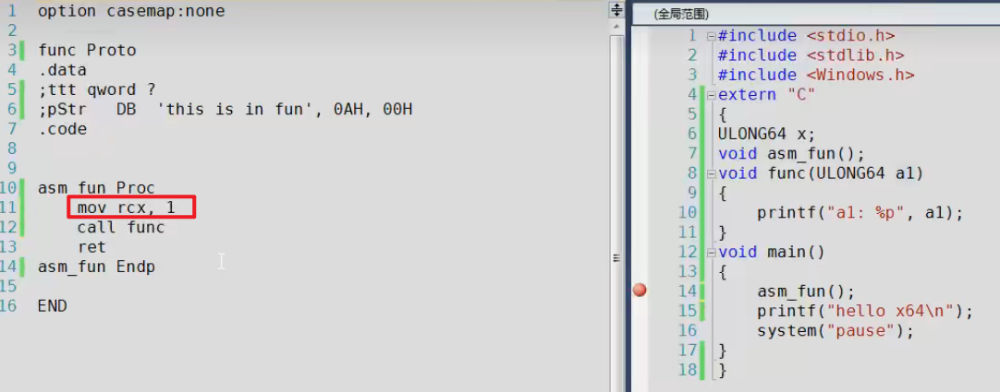
虽然这个程序可以正常的进行编译，但是在运行的时候会出现类似下图中的错误
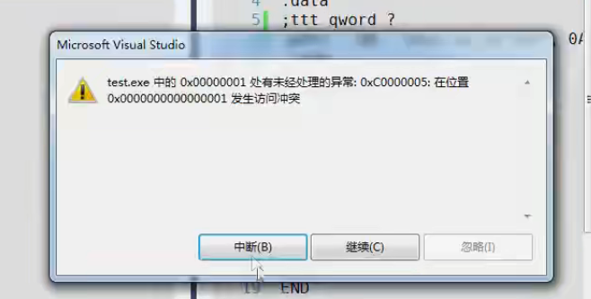
在上面示例的程序中出现这种问题的原因是因为 main 函数的返回地址被破坏。
观察所调用的 func( ) 函数的反汇编语言，该函数中的第一句就对 rcx 进行了保存的操作
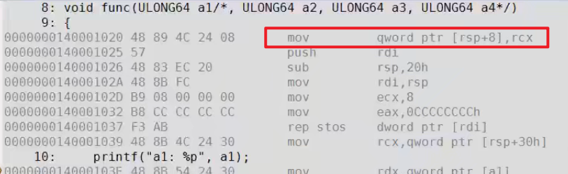
如果我们不提前在调用该函数的函数中对栈空间进行分配那么原来 [rsp+8] 中的内容就会被覆盖，如果里面原来的内容是一些重要的返回地址之类的就会导致程序出错。
正确的写法应该如下
1 | asm_fun Proc |
也就是说：被调用者所使用的栈空间是调用者提前分配给它的。
总结一下：
-
调用方分配和清理参数所用的栈空间
-
寄存器传参，也要分配参数栈空间
不定长参数
对于不定长参数，调用前至少分配4个参数的栈空间
这个很好理解，看下面的这个例子
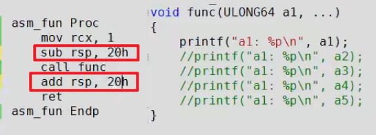
我们必须要分配至少4个参数的空间才能使程序编译成功
C 中的 print( ) 函数就是一个很好的例子
非易变寄存器
在 x64 中易变寄存器有如下7个：rax，rcx，rdx，r8，r9，r10，r11。除了易变寄存器，其它的都是非易变寄存器。
x64 中 push，pop 指令仅用来保存非易变寄存器，其他栈指针操作显式写寄存器 rsp 实现
当我们需要使用非易变寄存器的时候，需要使用 push pop 来保存和恢复原来寄存器的值。
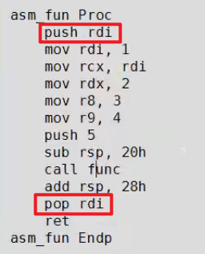
这样做的原因是，在 x64 的默认规则里非易变寄存器的值是不会进行更改的，返回到调用函数中非易变寄存器的值会直接拿回来继续使用。
在下面这个例子中有个 push 5 的操作用于第5个参数的传递，但是通过编译器所编译的程序时不会出现这种情况的
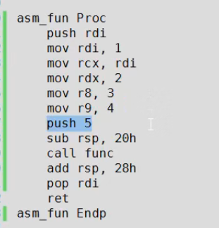
这个例子对于栈空间的操作是先 sub rsp 20h 分配然后再 add rsp 28h 平栈，前面是 20h 后面是 28h 是因为push 5 这个操作占了8个字节的空间。
下面是通过寄存器 rsp 实现第五个参数的传递
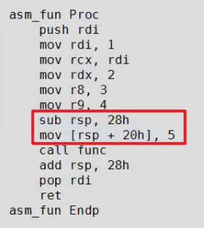
使用 rsp 实现操作后，对于栈空间的分配和回收看上去也更对称一点。
一次性分配
编译器为了程序运行的效率，通过一次性分配地址来减少 rsp 的来回移动避免多次寻址。
当一个调用者调用多个函数时，编译器会一次性分配局部变量和参数空间，分配空间的大小应该是所有调用函数中所需要的最大的那个(有待求证)，而不是对每一个函数都进行栈空间的分配和平栈操作。
未使用一次性分配
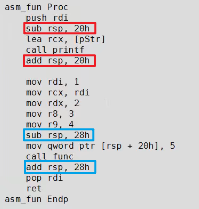
使用一次性分配栈空间，在蓝色块函数调用的部分中 rsp 的值一直都没有改变，rsp 的值只在红色块栈空间分配和回收的时候改变
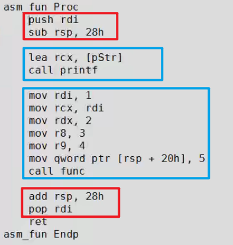
上面的这个已经非常接近于正常 C 语言编译器所生成的东西了。
我们也可以得出一个小结论：在 x64 中，单依靠 rsp 的加减，我们是无法判断被调用函数的参数个数的。
rsp对齐
每次进入 call 之前 rsp 满足 0x10 字节对齐
可以找个 exe 调试一下看看，可以发现再每次 call 之前 rsp 的值都是 0x10 的整数倍，对齐是为了寻址的高效。
开始状态
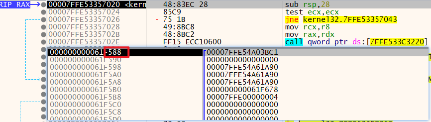
进入 call 之前
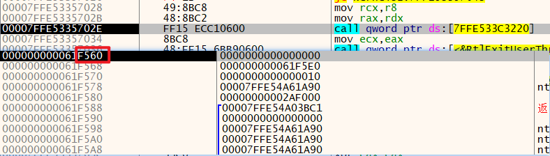
为了使 rsp 对齐，编译器再对函数调用的时候会选择分配更多的栈空间。
这个例子中起初只有一个局部变量的时候 rsp 减的值
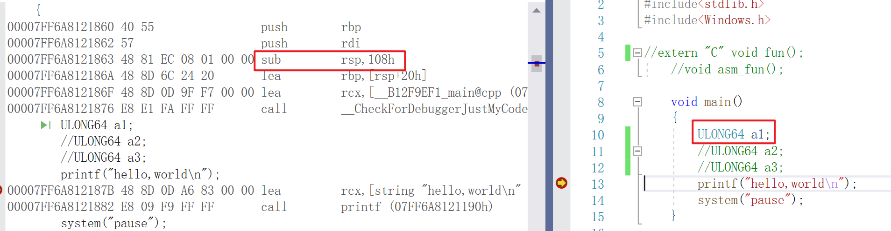
当再增加一个局部变量时，rsp 的值不仅仅只增加了8个字节，而是直接增加了 32 个字节。
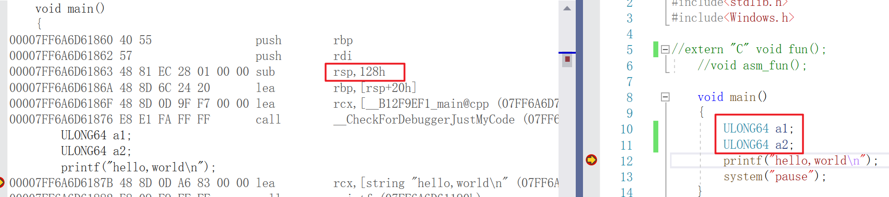
这里照例来说应该是只增加 0x10 的，但是不知道为什么我这个直接增加了 0x20 有待考究🤔
本文作者：GhDemi
本文链接： https://ghdemi.github.io/2022/07/10/x64%E6%B1%87%E7%BC%96%E5%92%8C%E9%80%86%E5%90%910x02/
文章默认使用 CC BY-NC-SA 4.0 协议进行许可，使用时请注意遵守协议。